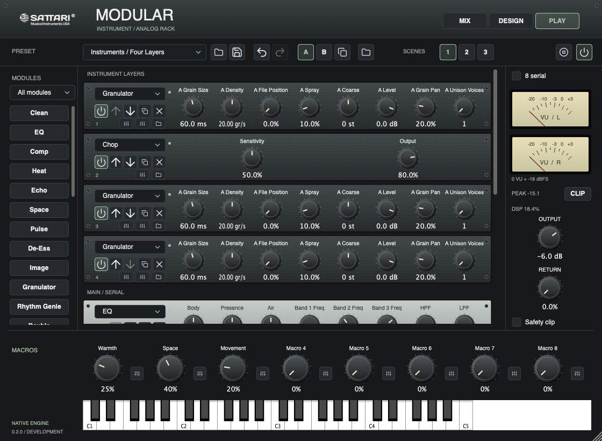

Find your order.
Load, duplicate, bypass and reorder integrated Sattari effects. Each instance keeps its own controls and processing history.
SATTARI MODULAR / FX + INSTRUMENT
One creative platform. Every part of your chain.
Vocal, Create and instrument collections, brought together with your installed VST3s in an analog-inspired rack.

22Native effects
4Instrument layers
8Assignable macros
3Recallable scenes
One platform, two starting points
Shape incoming audio with Modular FX, or combine up to four MIDI-driven source layers in Modular Instrument. Both share the same effects, collections and presets.
Eight serial effects, or six effects with a two-slot parallel return.
Layer Granulator, Chop, Rhythm Genie or installed VST3 instruments, with independent level, pan and key ranges.

Load, duplicate, bypass and reorder integrated Sattari effects. Each instance keeps its own controls and processing history.
Map two targets to each of eight macros, with adjustable ranges. Compare A/B settings and recall three rack scenes.
Save your chain as a preset or with your DAW session. Imported source audio travels inside the saved state.
Clean, Gate, De-Ess, EQ, Comp, Heat, Double, Face, Glass Choir and Space. Import supported Vocal preset files into the FX rack.
Echo, Heat, Pulse, Riser, Shimmer, Space, Warble, Warp, Vocoder and 808. Import supported Create preset files into the FX rack.
Three native source engines and four layers, with a focused Mix collection of cleanup, dynamics, stereo and transient effects.
Inside Modular
Integrated Sattari modules, ready to build into your chain.
Audio cleanup
Frequency shaping
Dynamics control
Drive and saturation
Tempo-synced delay
Reverb and ambience
Rhythmic movement
Sibilance control
Stereo shaping
Vocal doubling
Transition shaping
Pitch-shifted ambience
Pitch movement
Signal transformation
MIDI-driven carrier
Bass reinforcement
Level-dependent gating
Vocal character
Layered vocal texture
Attack and sustain
Band-based dynamics
Peak control
Play a granular source, import WAV, AIFF or FLAC audio for granular playback and onset-based chopping, or trigger Rhythm Genie from MIDI. Use any combination across four layers.
Load an external instrument in a source layer or an external effect in the chain. Open its own editor and preserve its settings with the rack. Plugins run in-process; trusted mono/stereo plugins only, with no AU hosting or crash isolation.
Detailed native controls, fourteen starting chains and collection filters are included. These are development features, not a claim of complete Stack editor parity or listening-approved presets.
From the native engine
A short automated instrument render from the 0.2.0 development build.
5 seconds / stereo WAV / native engine render
Version 0.2.0
The consolidated rack is a native development build. Earlier 0.1.1 package qualification does not certify this upgrade. Public downloads are not open.
Locally tested on Apple silicon
AU / VST3 / Standalone targets
Current automated native contracts and VST3 validation are part of development verification. Universal builds are supported by the build pipeline.
Fresh Intel and AU qualification, commercial signing, Apple notarization and broader DAW testing remain pending for this version.
Windows x64 build pipeline prepared
Planned: VST3 / Standalone
A native Windows build has not yet been qualified. No Windows installer or download is available.
Availability will follow native testing and supported-host qualification.
Clean-machine installation, extended DAW sessions, listening approval and distribution licensing review are still part of the release process. There is no announced release date.
Development hosting supports installed VST3 instruments and effects. AU, VST2 and AAX hosting, multi-output routing, external sidechains and forwarding generated plugin MIDI are not implemented. External plugin binaries, licenses and sample libraries do not travel with presets.
Legacy plugins retain their identities so existing DAW sessions can continue to open. Supported Vocal and Create JSON preset files can be imported into Modular FX; active legacy LFO modulation is rejected, not silently discarded. This does not convert DAW sessions or automation. Stack presets and its deeper granular editors are not yet migrated.
The rack, control settings, macro assignments and imported source samples are stored in Modular presets and host state. Each source layer supports up to 1,440,000 audio frames, or 30 seconds at 48 kHz. Scenes and A/B compare settings; they do not hold separate samples.
No. Modular is a hands-on effects and instrument rack. Automatic mixing is not part of this version.